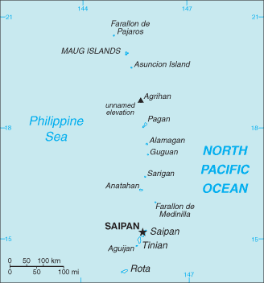
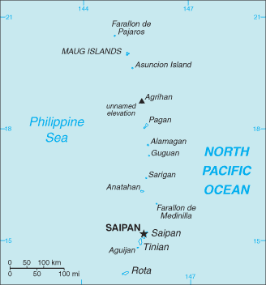

Australia-Oceania :: NORTHERN MARIANA ISLANDS
Introduction :: NORTHERN MARIANA ISLANDS
-
Under US administration as part of the UN Trust Territory of the Pacific, the people of the Northern Mariana Islands decided in the 1970s not to seek independence but instead to forge closer links with the US. Negotiations for territorial status began in 1972. A covenant to establish a commonwealth in political union with the US was approved in 1975, and came into force on 24 March 1976. A new government and constitution went into effect in 1978.
Geography :: NORTHERN MARIANA ISLANDS
-
Oceania, islands in the North Pacific Ocean, about three-quarters of the way from Hawaii to the Philippines15 12 N, 145 45 EOceaniatotal: 464 sq kmland: 464 sq kmwater: 0 sq kmnote: consists of 14 islands including Saipan, Rota, and Tiniancountry comparison to the world: 1972.5 times the size of Washington, DC0 km1,482 kmterritorial sea: 12 nmexclusive economic zone: 200 nmtropical marine; moderated by northeast trade winds, little seasonal temperature variation; dry season December to June, rainy season July to Octoberthe southern islands in this north-south trending archipelago are limestone, with fringing coral reefs; the northern islands are volcanic, with active volcanoes on several islandsmean elevation: NAelevation extremes: lowest point: Pacific Ocean 0 mhighest point: unnamed elevation on Agrihan 965 marable land, fishagricultural land: 6.6%arable land 2.2%; permanent crops 2.2%; permanent pasture 2.2%forest: 65.5%other: 27.9% (2011 est.)1 sq km (2012)approximately 90% of the population lives on the island of Saipanactive volcanoes on Pagan and Agrihan; typhoons (especially August to November)contamination of groundwater on Saipan may contribute to disease; clean-up of landfill; protection of endangered species conflicts with developmentstrategic location in the North Pacific Ocean
People and Society :: NORTHERN MARIANA ISLANDS
-
52,263 (July 2017 est.)country comparison to the world: 209noun: NA (US citizens)adjective: NAAsian 50% (includes Filipino 35.3%, Chinese 6.8%, Korean 4.2%, and other Asian 3.7%), Native Hawaiian or other Pacific Islander 34.9% (includes Chamorro 23.9%, Carolinian 4.6%, and other Native Hawaiian or Pacific Islander 6.4%), other 2.5%, two or more ethnicities or races 12.7% (2010 est.)Philippine languages 32.8%, Chamorro (official) 24.1%, English (official) 17%, other Pacific island languages 10.1%, Chinese 6.8%, other Asian languages 7.3%, other 1.9% (2010 est.)Christian (Roman Catholic majority, although traditional beliefs and taboos may still be found)0-14 years: 26.63% (male 7,536/female 6,384)15-24 years: 15.59% (male 4,343/female 3,807)25-54 years: 39.96% (male 10,834/female 10,049)55-64 years: 12.37% (male 3,548/female 2,919)65 years and over: 5.44% (male 1,539/female 1,304) (2017 est.)total: 33.6 yearsmale: 32.8 yearsfemale: 34.4 years (2017 est.)country comparison to the world: 93-0.51% (2017 est.)country comparison to the world: 22315 births/1,000 population (2017 est.)country comparison to the world: 1304.8 deaths/1,000 population (2017 est.)country comparison to the world: 199-15.2 migrant(s)/1,000 population (2017 est.)country comparison to the world: 217approximately 90% of the population lives on the island of Saipanurban population: 89.2% of total population (2017)rate of urbanization: 0.29% annual rate of change (2015-20 est.)SAIPAN (capital) 49,000 (2014)at birth: 1.06 male(s)/female0-14 years: 1.06 male(s)/female15-24 years: 1.28 male(s)/female25-54 years: 0.73 male(s)/female55-64 years: 1.14 male(s)/female65 years and over: 0.92 male(s)/femaletotal population: 0.93 male(s)/female (2016 est.)total: 12.7 deaths/1,000 live birthsmale: 15.1 deaths/1,000 live birthsfemale: 9.9 deaths/1,000 live births (2017 est.)country comparison to the world: 112total population: 75.4 yearsmale: 73.4 yearsfemale: 77.8 years (2017 est.)country comparison to the world: 1072.8 children born/woman (2017 est.)country comparison to the world: 610.36 physicians/1,000 population (2008)improved:urban: 97.5% of populationrural: 97.5% of populationtotal: 97.5% of populationunimproved:urban: 2.5% of populationrural: 2.5% of populationtotal: 2.5% of population (2015 est.)improved:urban: 79.7% of populationrural: 79.7% of populationtotal: 79.7% of populationunimproved:urban: 20.3% of populationrural: 20.3% of populationtotal: 20.3% of population (2015 est.)NANANA
Government :: NORTHERN MARIANA ISLANDS
-
conventional long form: Commonwealth of the Northern Mariana Islandsconventional short form: Northern Mariana Islandsabbreviation: CNMIformer: Trust Territory of the Pacific Islands, Mariana Islands Districtetymology: formally claimed and named by Spain in 1667 in honor of the Spanish Queen, MARIANA of Austriacommonwealth in political union with the US; federal funds to the Commonwealth administered by the US Department of the Interior, Office of Insular Affairspresidential democracy; a commonwealth in political union with the USname: Saipangeographic coordinates: 15 12 N, 145 45 Etime difference: UTC+10 (15 hours ahead of Washington, DC, during Standard Time)none (commonwealth in political union with the US); there are no first-order administrative divisions as defined by the US Government, but there are 4 municipalities at the second order: Northern Islands, Rota, Saipan, Tiniannone (commonwealth in political union with the US)Commonwealth Day, 8 January (1978)partially effective 9 January 1978 (Constitution of the Commonwealth of the Northern Mariana Islands); fully effective 4 November 1986 (Covenant Agreement); amended several times, last in 2012 (2016)US system applies, except for customs, wages, immigration laws, and taxationsee United States18 years of age; universal; note - indigenous inhabitants are US citizens but do not vote in US presidential electionschief of state: President Donald J. TRUMP (since 20 January 2017); Vice President Michael R. PENCE (since 20 January 2017)head of government: Governor Eloy S. INOS (since 20 February 2013); Lieutenant Governor Ralph TORRES (since 20 February 2013)cabinet: Cabinet appointed by the governor with the advice and consent of the Senateelections/appointments: president and vice president indirectly elected on the same ballot by an Electoral College of 'electors' chosen from each state; president and vice president serve a 4-year term (eligible for a second term); under the US Constitution, residents of the Northern Mariana Islands do not vote in elections for US president and vice president; however, they may vote in Democratic and Republican party presidential primary elections; governor directly elected by absolute majority vote in 2 rounds if needed; election last held on 4 November 2014 with a runoff on 21 November 2014 (next to be held in 2018)election results: Eloy S. INOS reelected governor; percent of vote in runoff - Eloy S. INOS (Republican) 57%, Heinz HOFSCHNEIDER (Republican) 43%; Ralph TORRES (Republican) reelected lieutenant governornote: Benigno R. FITIAL was impeached by House of Representatives on 11-12 February 2013 and resigned on 20 February 2013; Eloy INOS sworn in as governor the same daydescription: bicameral Northern Mariana Commonwealth Legislature consists of the Senate (9 seats; members directly elected in single-seat constituencies by simple majority vote to serve 4-year terms) and the House of Representatives (20 seats; members directly elected in single-seat constituencies by simple majority vote to serve 2-year terms)elections: Senate - last held on 8 November 2016 (next to be held in November 2020); House of Representatives - last held on 8 November 2016 (next to be held in November 2018)election results: Senate - percent of vote by party - NA; seats by party - Covenant Party 3, Republican Party 3, Democratic Party 1, independent 2; House of Representatives - percent of vote by party - NA; seats by party - Republican Party 14, independent 6note: the Northern Mariana Islands directly elects 1 member by simple majority vote to serve a 2-year term as a delegate to the US House of Representatives; the delegate can vote when serving on a committee and when the House meets as the Committee of the Whole House but not when legislation is submitted for a “full floor” House vote; election of delegate last held on 4 November 2016 (next to be held in November 2018)highest court(s): Supreme Court of the Commonwealth of the Northern Mariana Islands or CNMI (consists of the chief justice and 2 associate justices); US Federal District Court (consists of 1 judge); note - US Federal District Court jurisdiction limited to US federal laws; appeals beyond the Northern Mariana Islands Supreme Court are referred to the US Supreme Courtjudge selection and term of office: judges of the Supreme Court of the CNMI appointed by the governor and confirmed by the CNMI Senate; judges appointed for 8-year terms and can serve another term if approved through voter election; US Federal District Court judges appointed by the US president and confirmed by the US Senate; judges appointed for renewable 10-year termssubordinate courts: Superior CourtCovenant Party [Benigno R. FITIAL]Democratic Party [Dr. Carlos S. CAMACHO]Republican Party [Juan S. REYES]NAPIF (observer), SPC, UPUblue with a white, five-pointed star superimposed on a gray latte stone (the traditional foundation stone used in building) in the center, surrounded by a wreath; blue symbolizes the Pacific Ocean, the star represents the Commonwealth; the latte stone and the floral head wreath display elements of the native Chamorro culturelatte stone; national colors: blue, whitename: "Gi Talo Gi Halom Tasi" (In the Middle of the Sea)lyrics/music: Jose S. PANGELINAN [Chamoru], David PETER [Carolinian]/Wilhelm GANZHORNnote: adopted 1996; the Carolinian version of the song is known as "Satil Matawal Pacifico;" as a commonwealth of the US, in addition to the local anthem, "The Star-Spangled Banner" is official (see United States)
Economy :: NORTHERN MARIANA ISLANDS
-
The Northern Mariana Islands' economy benefits substantially from financial assistance from the US. In fiscal year 2013, federal grants accounted for 35.4% of the Commonwealth’s total revenues. A small agriculture sector consists of cattle ranches and small farms producing coconuts, breadfruit, tomatoes, and melons.The Commonwealth’s economy continued to recover in 2013. Real GDP increased 4.4%, following a 2.1% gain in 2012. Economic growth in 2013 reflected increases in consumer spending and exports of services, mainly spending by foreign tourists.Tourism continued to grow in 2013, after posting double-digit growth in 2012. The tourist industry employs approximately a quarter of the work force and accounts for roughly one-fourth of GDP. The Commonwealth is making a concerted effort to broaden its tourism by extending casino gambling from the small Islands of Tinian and Rota to the main Island of Saipan, its political and commercial center.$682 million (2013 est.)$665 million (2012)$649 million (2011)note: GDP estimate includes US subsidy; data are in 2013 dollarscountry comparison to the world: 208$1.232 billion (2013 est.)4.5% (2013)2.1% (2012)-6.8% (2011)country comparison to the world: 47$13,300 (2013 est.)$12,900 (2012)$12,400 (2011)country comparison to the world: 116household consumption: 91.3%government consumption: 51.5%investment in fixed assets: 3.8%investements in inventories: NA%exports of goods and services: 42.2%imports of goods and services: -88.9% (2013)agriculture: 1.7%industry: 2.9%services: 95.4% (2012)vegetables and melons, fruits and nuts; ornamental plants; livestock, poultry, eggs; fish and aquaculture productstourism, banking, construction, fishing, handicrafts, other servicesNA%27,970note: includes foreign workers (2010 est.)country comparison to the world: 207agriculture: 1.9%industry: 10%services: 88.1% (2010 est.)11.2% (2010 est.)8% (2005 est.)country comparison to the world: 143NA%lowest 10%: NA%highest 10%: NA%revenues: $246.4 millionexpenditures: $249.8 million (2013 est.)20% of GDP (2013 est.)country comparison to the world: 158-0.3% of GDP (2013 est.)country comparison to the world: 491 October - 30 September-2.5% (2013 est.)1.1% (2012)country comparison to the world: 3$288 million (2013)$268 million (2012)country comparison to the world: 181garments$606 million (2013)$531 million (2012)country comparison to the world: 187food, construction equipment and materials, petroleum products$NAthe US dollar is used
Energy :: NORTHERN MARIANA ISLANDS
-
60,600 kWh (January 2009)country comparison to the world: 21848,300 kWh (January 2009)country comparison to the world: 2170 kWh (January 2009 est.)country comparison to the world: 1230 kWh (January 2009 est.)country comparison to the world: 136
Communications :: NORTHERN MARIANA ISLANDS
-
general assessment: digital fiber-optic cables and satellites connect the islands to worldwide networksdomestic: wide variety of services available including dial-up and broadband Internet, mobile cellular, international private lines, payphones, phone cards, voicemail, and automatic call distribution systemsinternational: country code - 1-670; satellite earth stations - 2 Intelsat (Pacific Ocean) (2015)1 TV broadcast station on Saipan; multi-channel cable TV services are available on Saipan; 9 licensed radio broadcast stations (2009).mptotal: 16,000percent of population: 30.6% (July 2016 est.)
Transportation :: NORTHERN MARIANA ISLANDS
-
5 (2013)country comparison to the world: 180total: 32,438 to 3,047 m: 21,524 to 2,437 m: 1 (2017)total: 22,438 to 3,047 m: 1under 914 m: 1 (2013)1 (2013)total: 536 km (2008)country comparison to the world: 195major seaport(s): Saipan, Tinian, Rota
Military and Security :: NORTHERN MARIANA ISLANDS
-
defense is the responsibility of the US
Transnational Issues :: NORTHERN MARIANA ISLANDS
-
none